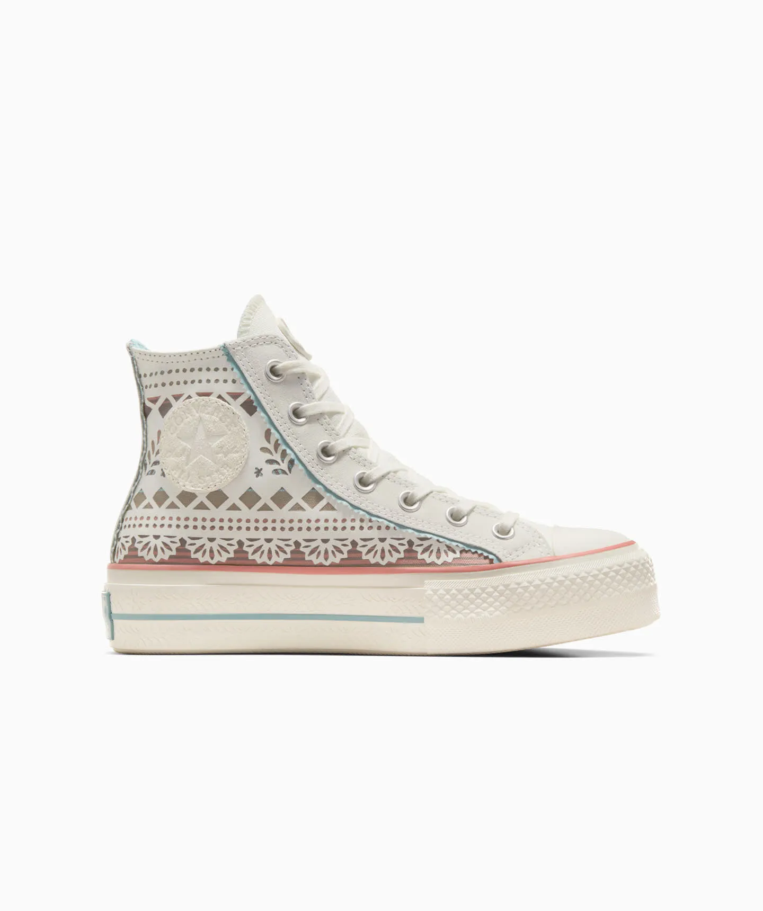

Tenis Converse Día de Muertos Lift Multicolor en Bota de Lona Unisex

Los diseños de la colección representan tradiciones reales para dar vida a las festividades
del Día de Muertos tanto en calzado como en ropa. Los elementos del altar cobran vida en los Chuck
Taylor 70s y Chuck Taylor All Star Lift. Cada diseño está inspirado en elementos auténticos de la
cultura mexicana, con velas, calaveras y Papel Picado que hacen un guiño a la unión de los vivos y los
muertos. Los Chuck Taylor 70s representan las velas y los elementos del altar, mientras que los Chuck
Taylor All Star Lift reconocen la decoración y el color del festival con el Papel Picado.